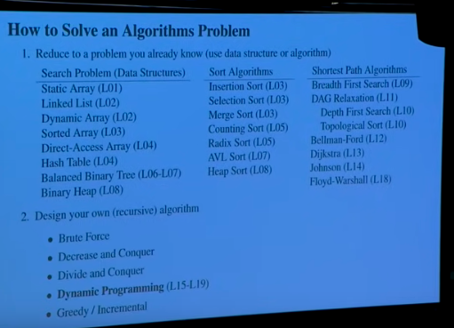
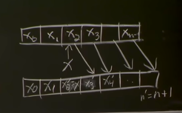
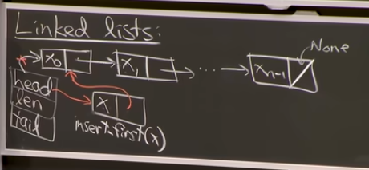
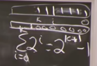
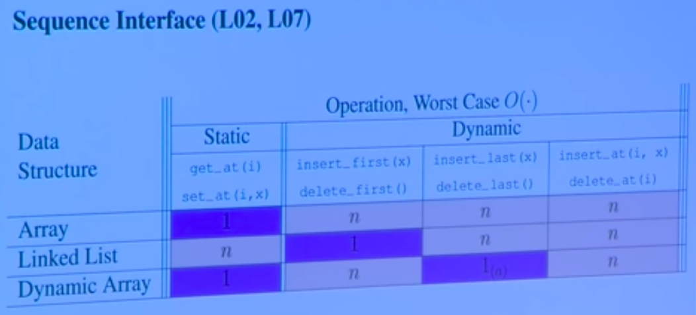

Table of Contents
Algorithms & Computation
communicating computational problem solving, its efficiency and correctness
what is a computational problem?
computational problems can have multiple correct outputs to an input —› define a problem by specifying a predicate and observe output (binary) —› can graph/map out
provide deterministic algorithm to find answer...
for general problems, algorithms can accept arbitrarily sized input, doesn't map what a problem does. "Correctness" defined by whether output is correctly given.
f:I—›O .. functional programming definition
example: birthday problem!:: - maintain record - check if birthday in record: - if so return pair, - add new student to record, - return none
use induction & recursion to prove correctness of algorithm...
inductive hypothesis = "if first k students contain match, algorithm returns match before interviewing student k+1" = predicate k increases up to n base case: k=0 (case holds!) assume IH true for k=k'{- if k' contains match —› alreated returned by induction, - else if k'+1 contains match, alg k'+1 against all students}
prove efficiency...
dont measure time, instead count fundamental operations (ops), expect performance to depend on (with respect to) size of our input (n) = how well algorithm performs, not how well it's implemented O(.) upper bound, omega (.) lower bounds (theta) corresponds to both asymptotic analysis***
common algorithms that relate algorithm running time to input size linear time algorithm efficiency from top to bottom '''''''''''''''''''''''''''''''''''''''''''''''''''
- (theta)1 = constant time
- ()lg n= logarithmic time
- ()n = linear
- ()n lg n= log n
- ()n^2 = quadratic
- ()n^c = polynomial (c for constant)
- 2^(theta)n = exponential time, bad bc if plotted as function of n
—> dnt want shit to go too high. exponential crap!
define model of computation...
word-RAM (RAM = random access memory, in constant time) memory (string of bits), CPU where byte (chunk of bits = word) ex 64 bit machine, to operate on to spit back, addressable memory 20 exabytes!! (data grabbed, registered separately, output also then registered then spat out) ex can do integer arithmetic, logical ops (boolean etc), bitewise ops, on CPU memory
if you want to operate on non-constant n, linear amount of data, how long will it take? concerns data structures, store large amount of data and operate on that
Data Structures & Dynamic Arrays
- sequence interface & data structures
- linked lists, dynamic arrays, amortication
- set interface
Difference between Interface (API/ADT) vs Data Structure
specification, what data you can store [problem] vs representation, how to store data [algorithmic solution] interface where you specify what operations are supported, what they mean vs data structure defines algorithms to support operations
interfaces (2 main ones for set & sequence data)
- set
- sequence
static sequence interface:
items x0, x1, ... xn-1 build(x): make new ds for items in x (x being an iterable in py, in this seq) len(): return n (length, OO) iter_seq(): output x0, x1...,xn-1 in seq order get_at(i): return xi (index i) set_at(i,x): return xi to x get_first/last() set_first/last()
array/list x1 = array.get_at(1) - method get_at(array, 1) - function
array.set_at(1, x1) (mutating set inside array)
not so great (breaks api purpose): o = object() o.attr = 1 - setter attr = o.attr - getter
Natural solution for this problem: static array (only dynamic arrays in python) with optimal running times key = word RAM model of computation - memory = array of w-bit words [....|!....|....|!....] - "array" = consecutive chunk of memory (starts at ! to !, includes two words, 0, 1) —› array[i] = memory[address(array)+i] = can access memory in constant time (assumed), get_at & set_at —› array access is O(I)??????? = constant time side effect of this assumption^ —› must assume w is at least lgn (currently w = 64, 256, must grow at least as fast as n, log n to account for n words in RAM, we care about scalability for v large n in algorithms, want to know what growth function is and ignore lead constant factor, asymptotic notation! - hashing, in next chapter) O(I) per get_at/set_at/len O(n) per build/iter_seq - linear time memory allocation model: allocate array of size n in theta(n) time .. can imagine this being constant time but doesn't matter?, if you allocate some chunk of memory you hv no idea if it's initialised, initialising that array to 0s will cost linear time (?) —› side effect of this model; space used = time used (space=O(time)), assumed it costs allocate memory
Dynamic Sequence Interface:
static sequence PLUS: insert_at(i,x): make x the new xi, shifting xi —› xi+1 —› xi+2 —›...—›xn-1 —› xn'-1 (n'=n+1)
delete_at(i): shift xi<-xi+1<—...<—xn'-1 (n'=n-1) <—xn-1 insert/delete_first/last(x)/() - adding in front, or to tail of array [][-----][]
[solving sequence interfaces]
linked lists
= store items in nodes, each node has an item in it (actual values, x0 --- xn-1) and a next field, next pointers link items all together, in this order. data structure represented by head of list, and len. relying on pointers being stored as single word (can dereference and see what value is at end of each pointer (pointers are indices in giant array, address of array, tells us where in memory pointed value is) in constant time in word RAM model) - here we have arrays of size 2, possibly in arbitrary order in RAM model
Dynamic Sequence Ops
on a static array: if you insert/delete = at() costs theta(n) time (first, all items must shift, to maintain A[i] = xi - must copy over) costs bc 1. shifting (not part of delete in array, but shifting in MEMORY n, size is constant! therefore new array would not be continguous to new one) 2. allocate new array (not allows to change size of static array) - must copy over to new array to throw away old one, thus bad for dynamic ops - that's why bad
on a linked list: can efficiently insert_first(x), where you create node, get it to point to 0 node, get head to point to new first node. insert/delete_first(): O(O) time BUT everything else slow: to get/set_at need theta(i) time (in worst case, theta(n)) = must walk to that position by following every pointer (even w insert/delete_at(i) tho better at being dynamic easier way to get last item, is to have tail pointer to last list (= data pointer augmentation BUT must keep this up to date all the time)
—› arrays good if random access and nothing dynamic —› linked list great if working on ends even dynamically
NEXT Try to get good running times of static arrays and linked lists... .. how is python implemented relates to overall message of L1/2, automatically creates dynamic arrays, called lists
Dynamic arrays (python lists)
in py interpreter... - relax constraint that size(array) = n —› # items in seq, "roughly n" in algorithm context, "can mean you throw away constant factors" ??? - enforce size = theta(n) (at least n and at most some constant times n & >= n - maintain that A[i] = ni (that ith item of array represents xi) —› array with some empty nodes at end what do you do if insert_last(x)? 1. A[len] = x 2. increment length (len+=1) .. how do you know you have enough room? you don't, incorrect algorithm if len = size = n —› track length & size, size = full len array, len = just the portion that has designated values 3. insert_last(x): add to end unless n = size (representation size)
with flexibility of not having to allocate/copy every single time, if n = size: - allocate new array of constant factor larger ex 1.1, 2, 5 etc * size OR ex size + 5 (trolling answer, the latter is bad bc you have to resize frequently, 5 steps later - linear step) n insert_last() from empty array - resize at n=1, 2, 4, 8, 16... —› resize cost = theta(1+2+4+8+16+...+n) = theta((logn)sum(i=n) of 2^i) = geometric series (ith bit = 1) = theta(2^lgn) = theta(n), takes linear time geometric series dominated by last term (grows exponentially)
—› constant O(i) amortised
Amoritisation
operation takes T(n) amortised time if any k ops take =< k*T(n) time (averaging over ops sequence)
